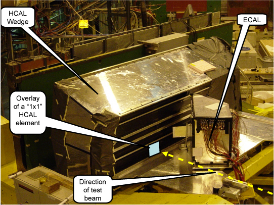
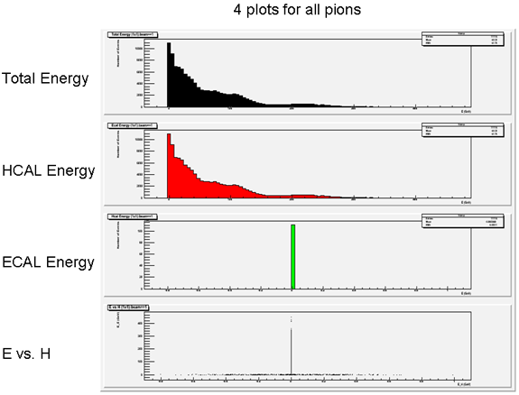

Resources for CMS e-Lab Milestones
The CMS test beam
To determine how the CMS detector actually behaves, particle physicists have to test it. They fire beams of particles (whose energies and composition are known independently) into a representative sample of detector components. CMS Test Beam e-Lab data was obtained for a test of just two detector components, HCAL and ECAL. As the annotated diagram below indicates, an HCAL wedge (consisting of a grid of n x m detector elements) sits behind a movable ECAL element. Beams of electrons, muons, or pions (a relatively stable meson consisting of quark and an antiquark) of various known energies are aimed at various detector elements. (These elements are named by their horizontal and vertical angles from what will become the collision point inside the CMS detector: horizontally the angle is eta, and vertically the angle is phi.)

Test Beam Data Types
As each element in HCAL is targeted with the movable ECAL element in front, data is written for that element alone (called "1x1" data), for that element and each of its adjacent neighbors (in a "3x3" grid surrounding the targeted element), and again for a wider "5x5" grid.
Ogre Tutorial
Particle physicists access test beam data with a computational analysis package called ROOT. You can use that same set of computational tools through a simpler interface called the Online Graphical ROOT Environment, that is, OGRE.
OGRE enables you to select four kinds of plots from the data, each of which can be selected for 1x1, 3x3 and 5x5 data sets. Each plot corresponds to a basic question you can ask of the data. What is the amount of energy deposited in the detector (ECAL and HCAL combined) by a given set of particles? The answer is revealed in the Total Energy plot for that data set. (You can run a Total Energy plot, or any of the four, for any combination of data runs you choose.) What about the energy deposited in just HCAL? (That's the HCAL Energy plot.) In just ECAL? (The ECAL Energy plot.) How do the energies deposited in each component compare, for each particle in a data set? (That's OGRE's E vs. H plot.)

To generate any of these plots, use the check boxes in OGRE to choose the appropriate plot type and select data sets, and choose PLOT at the bottom left of the OGRE home page. Read through the associated output, paying attention to the numerical values, the units, and interpreting the meaning of each plot element (axes, points, slopes, etc.) Once you become comfortable with reading a few plots, experiment with other features in OGRE to see what they can do!
The four basic plots in OGRE correspond to basic questions which can be asked of any data set or combinations of data sets. The answers to these basic questions lead to further questions. Four sets of such questions — four test beam studies — are described in some detail below.
Four test beam studies with OGRE
The plot types supported by OGRE make it possible to conduct studies a number of areas, four of which are described in detail below:
Choosing a test beam study
Test beam studies are questions you can use test beam data and computational analysis tools to answer. Questions can arise in more than one way:
You might begin with some understanding, then deepen it by consulting the data. (For example, understanding what calorimetry is, you might ask how efficiently or precisely the energy a beam deposits in the detector is reported: that's a Detector Resolution study.)
On the other hand, you might begin by exploring the data, asking how one variable depends upon another, and let the pattern you see in the results lead you to a question.
It's a good idea to begin with one or more of the studies described in detail in the e-Lab, but there are plenty of other questions to discover!
|